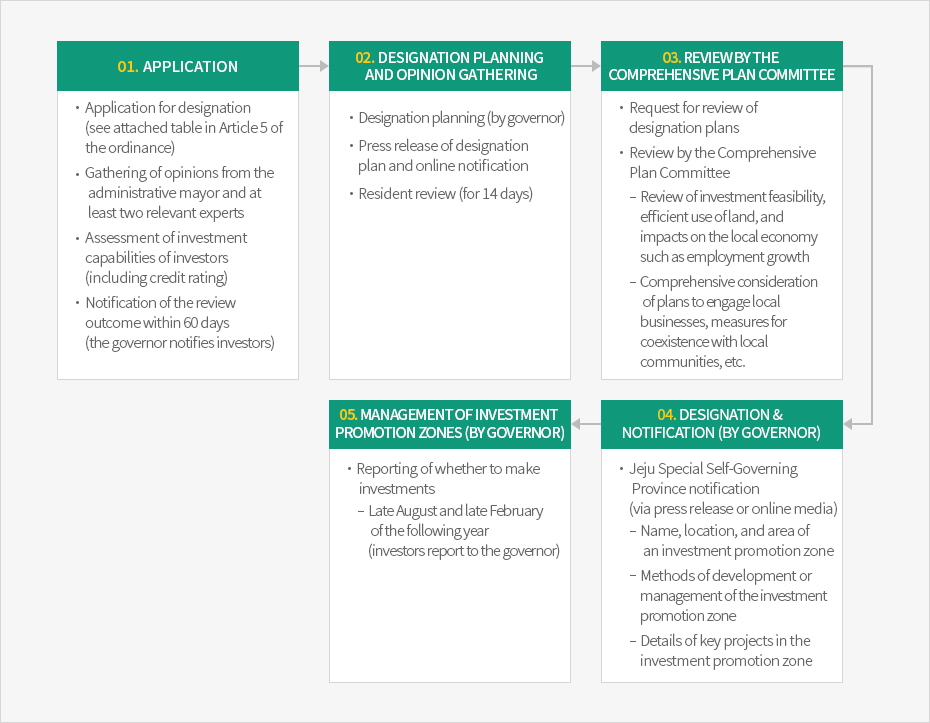

Investment Promotion Zone
- Home
- Investment Environment
- Support Programs
- Investment Promotion Zone
Jeju Investment Promotion Zones (JIPZ)
Jeju Special Self-Governing Province grants unique incentives to investments made on Jeju from either foreign or domestic entities. A variety of benefits such as tax reductions and the application of special cases for public properties will be granted to promote core industries of Jeju Island. The designation is available for any Jeju area by choice of the investors.Types of Investment Promotion Zones
Investment Promotion Zones are divided into individual-type and complex-types. The individual-type can be designated to any Jeju area as chosen by the investors, from among 27 types of industries. The complex-type can be designated by complex residents in 27 types of industries when a development project operator secures over two-thirds of the land in a recreational area or any area with a district unit plan.Individual-Type Investment Promotion Zones
Conditions for Designation
Total investment amount exceeding USD 20 million- Tourist hotel businesses, floating tourist hotel businesses, Korean traditional hotel businesses (excluding casino businesses and bonded sales businesses), general resort complex businesses, specialized resort businesses (excluding golf courses, resort condominium businesses), tourist excursion ship businesses, tourist theater businesses, amusement complex businesses, international conference facility businesses, and tourist restaurant businesses
- Cultural industry, senior citizens’ welfare facility businesses, youth training facility businesses, tramway businesses, electricity generation businesses, and training institute businesses
- Autonomous schools, international high schools, foreign educational institutions, and international schools
- Medical institutions (excluding clinics, dental offices, oriental medical clinics, maternity hospitals)
- Advanced technology utilization businesses, healthcare technology R&D businesses and R&D service businesses, food and beverage manufacturing businesses, marina businesses, cosmetics manufacturing businesses, and R&D businesses
Complex-Type Investment Promotion Zones
Conditions for Designation
Total investment amount exceeding KRW 100 billion- The complex-type can be designated among complex residents in 27 types of industries, which are the same as those for the individual-types, when a development project operator secures over two-thirds of the land in a recreational area or any area with a district unit plan.
Incentives for Investment Promotion Zones
Exemption of National Taxes
- Corporate taxes and income taxes are exempted for three years, and then reduced by 50% for two years.
- For development project operators, corporate taxes and income taxes are reduced by 50% for three years, and then 25% for two years.
- Customs duties are exempted for capital goods that are imported for direct use within three years from the designation date.
Exemption of Local Taxes
- Acquisition taxes are exempted for five years from the designation date (for complex-type, from the initial date of real estate acquisition)
- Property taxes are exempted for ten years from the designation date (for complex-type, from the initial date of the formation of tax liability)
Exemption of Various Charges
- Development charges and public water fees are exempted; farmland preservation charges, alternative grassland creation expenses, and alternative forest resources development expenditure are reduced by 50%, and sewerage charges by 15%
Designation Process


-
01. Application
- Application for designation (see attached table in Article 5 of the ordinance)
- Gathering of opinions from the administrative mayor and at least two relevant experts
- Assessment of investment capabilities of investors (including credit rating)
- Notification of the review outcome within 60 days (the governor notifies investors)
-
02. Designation Planning and Opinion Gathering
- Designation planning (by governor)
- Press release of designation plan and online notification
- Resident review (for 14 days)
-
03. Review by the Comprehensive Plan Committee
- Request for review of designation plans
- Review by the Comprehensive Plan Committee
- Review of investment feasibility, efficient use of land, and impacts on the local economy such as employment growth
- Comprehensive consideration of plans to engage local businesses, measures for coexistence with local communities, etc.
-
04. Designation & Notification (by governor)
- Jeju Special Self-Governing Province notification (via press release or online media)
- Name, location, and area of an investment promotion zone
- Methods of development or management of the investment promotion zone
- Details of key projects in the investment promotion zone
- Jeju Special Self-Governing Province notification (via press release or online media)
-
05. Management of Investment Promotion Zones (by governor)
- Reporting of whether to make investments
- Late August and late February of the following year (investors report to the governor)
- Reporting of whether to make investments

Post-Designation
Following designation, Jeju Special Self-Governing Province monitors the progress of the investment plans for Investment Promotion Zones.
Designee for Investment Promotion Zones should report to Jeju Special Self-Governing Province on whether to carry out investments on a biannual basis (end of August and end of February).
Designee for Investment Promotion Zones should report to Jeju Special Self-Governing Province on whether to carry out investments on a biannual basis (end of August and end of February).